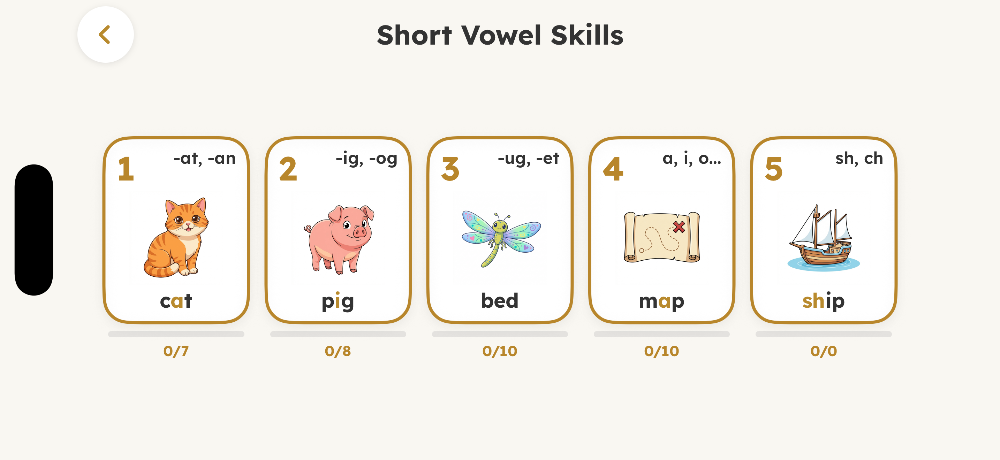
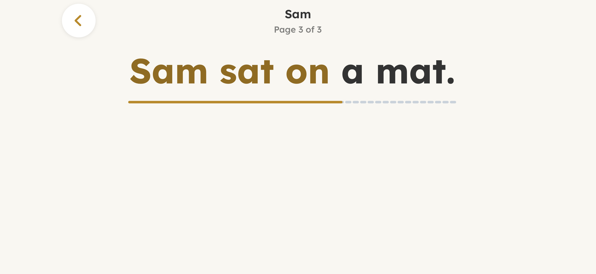
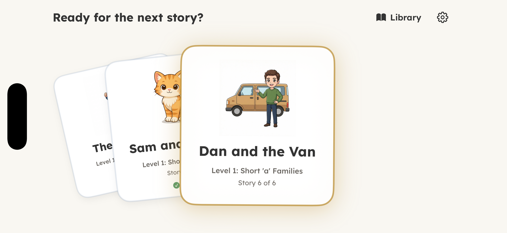
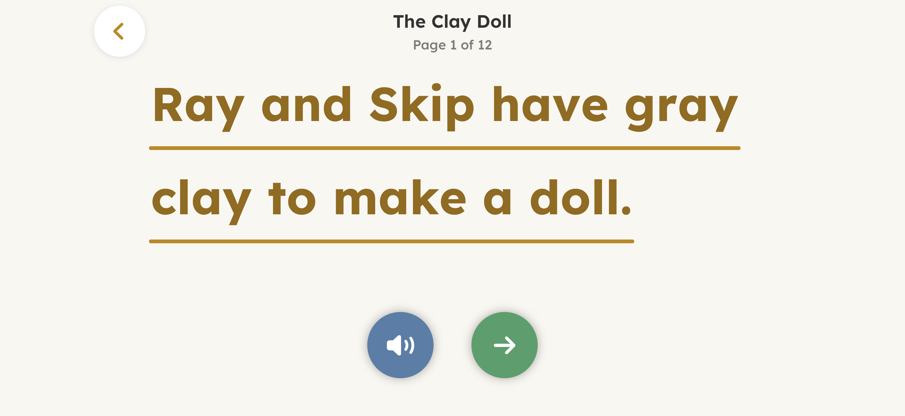
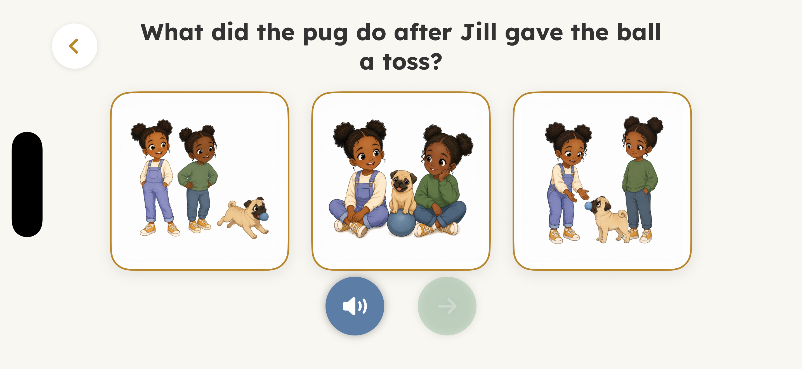

Build on each sound
Twenty levels move from short vowels and blends to more advanced sounds.
Glide under the words, listen for support, and answer a picture question after each story.
See how it works
Letters turn gold as a finger moves under the sentence.
How it works

Twenty levels move from short vowels and blends to more advanced sounds.

Return to familiar stories or continue with the next one when ready.

Stories become longer while the reading experience stays familiar.

A picture question invites readers to think about what happened.
For families
A one-time purchase unlocks the full 20-level library.
Privacy details